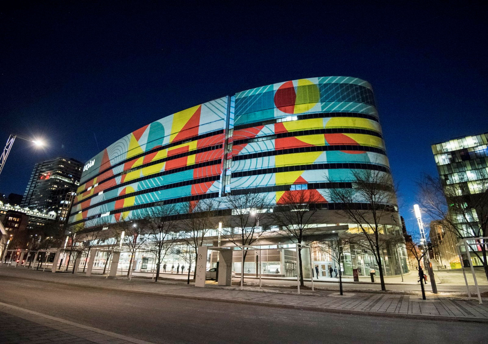

Recherche · Communications scientifiques
Présentations scientifiques
Communications, conférences et présentations liées aux travaux de recherche de la Chaire Co-operators en analyse des risques actuariels.
Présentations scientifiques
Semi-parametric modeling of risk exposure with monotonicity constraints in automobile insurance
8th Workshop on Insurance Mathematics (WIM), University of Toronto, Toronto, Canada (ON), 5 mars 2026
QUBO Formulation in the CART Algorithm
AlgoLab Quantum Computing Symposium 2025, Institut Quantique, Sherbrooke, Canada (QC), 13 novembre 2025
Arbre de régression QUBO pour la modélisation des réserves
Journée Actuariat et Finance Quantique, Université Laval, Québec, Canada (QC), 7 novembre 2025
QUBO Formulation in the CART Algorithm for Individual Reserve Modeling in P&C Insurance
Actuarial Research Conference (ARC), Toronto, Canada (ON), 1er juillet 2025
Individual Loss Reserving for Multi-coverage Insurance
Actuarial Research Conference (ARC), Toronto, Canada (ON), 1er juillet 2025
QUBO Formulation in the CART Algorithm
Congrès annuel de la Société statistique du Canada, Saskatoon, Canada (SK), 29 mai 2025
Actuarial fire-spreading model based on tree-structured probabilistic graphical model, with insurance applications
Congrès annuel de la Société statistique du Canada, Saskatoon, Canada (SK), 29 mai 2025
Balancing Risk Assessment and Social Fairness:An Auto Telematics Case Study
Casualty Actuarial Society webinar, Virtuel, 5 décembre 2024
New CAS Race and Insurance research: Telematics and Sensitive Variables
Actuarial Students’ National Association (Canada) webinar, Virtuel, 17 novembre 2024
Actuarial fire-spreading model based on tree-structured Markov Random Fields, with insurance applications
Waterloo Student Conference in Statistics, Actuarial Science and Finance, University of Waterloo, Canada (ON), 18 octobre 2024
Explicit Solution Simulation Method for the 3/2 Model
Eastern Conference in Mathematical Finance, University of Toronto, Toronto, Canada (ON), 1er septembre 2024
Assessing Fire-Induced Losses through Markovian Random Fields on Trees
Actuarial Research Conference (ARC), Murfreesboro, USA (TN), 17 juillet 2024
Including Expert Knowledge in Tarification: a Bayesian Approach
Actuarial Research Conference (ARC), Murfreesboro, USA (TN), 17 juillet 2024
Comparison of Offset and Weighted Regressions in Tweedie Case
International Congress on Insurance: Mathematics and Economics, Chicago, Canada (ON), 8 juillet 2024
Robust Extreme Thresholds Through Generalised Bayesian Model Averaging
Congrès annuel de la Société statistique du Canada, St-John’s, Canada (TN), 2 juin 2024
Multiple Bonus–Malus Scale Models for Insureds of Different Sizes
McMaster University, Hamilton, Canada (ON), 1er mars 2024
Modelling Of Fire Contagion With Application In Farm Insurance
University of Waterloo, Waterloo, Canada (ON), 29 février 2024
A Non-Parametric Estimator for Archimedean Copulas under Flexible Censoring Scenarios and an Application to Claims Reserving
Séminaire Quantact en mathématiques actuarielles et financières, Université Laval, Québec, Canada (QC), 9 février 2024
Uncertainty In Heteroscedastic Bayesian Model Averaging
Computational and Methodological Statistics (CMS) International Conference , Berlin, Allemagne, 16 décembre 2023
Modelling Of Fire Contagion With Application In Farm Insurance
Université de Barcelone, Barcelone, Espagne, 22 novembre 2023
Modelling Of Fire Contagion With Application In Farm Insurance
Georgia State University, Atlanta, USA (GA), 10 novembre 2023
Impact Of Combination Methods On Extreme Precipitation Projections
Actuarial Research Conference (ARC), Drake University, Des Moines, USA (IA), 30 juillet 2023
Bonus-Malus Scale Models For Claim Severities And Total Claim Amounts: Tweedie Distribution
Actuarial Research Conference (ARC), Drake University, Des Moines, USA (IA), 30 juillet 2023
Dependence In Claim Processing Time: A Frailty Analysis Perspective
Congrès annuel de la Société statistique du Canada, Ottawa, Canada (QC), 16 juillet 2023
Generalized Bonus-Malus Scale Models For Insureds Of Different Sizes
International conference on Time Series and Forecasting, Gran Canaria, Espagne, 12 juillet 2023
Individual Claims Reserving With Dependent Censored Data
International Congress on Insurance: Mathematics and Economics, Édimbourg, Royaume-Uni, 4 juillet 2023
Modelling Of Fire Contagion With Application In Farm Insurance
Université de Las Palmas, Las Palmas, Espagne, 28 juin 2023
Individual Claims Reserving With Dependent Censored Data
Insurance Data Science Conference, Londres, Royaume-Uni, 15 juin 2023
Bonus-Malus Scales Models For Predictive Modeling
Ratemaking, Product and Modeling Virtual Seminar of the Casualty Actuarial Society, San Diego, USA (CA), 13 mars 2023
Parametric Outstanding Claim Payment Count Modelling Through A Dynamic Claim Score
Perspectives on Actuarial Risks in Talks of Young Researchers, Valence, Espagne, 29 janvier 2023
Individual Claims Reserving Using Activation Patterns
15th International Conference of the ERCIM WG on Computation and Methodological Statistics (CMStatistics 2022), Londres, Royaume-Uni, 17 décembre 2022
Modèles équitables en assurance
Congrès de l’Association des Actuaires IARD (AAIARD), Québec, Canada (QC), 10 novembre 2022
Longitudinal Claim Count Models Using Splines For Predictive Ratemaking
Séminaire d’actuariat de l’Université du Connecticut, Virtuel, 1er novembre 2022
Parametric Outstanding Claim Payment Count Modelling Through A Dynamic Claim Score
Workshop on Risk Management and Insurance Research, Barcelone, Espagne, 20 octobre 2022
Longitudinal Claim Count Models Using Splines For Predictive Ratemaking
3rd Waterloo Student Conference in Statistics, University of Waterloo, Canada (ON), 14 octobre 2022
Individual Claims Reserving Using Activation Patterns
3rd Waterloo Student Conference in Statistics, University of Waterloo, Canada (ON), 14 octobre 2022
Modelling Of Fire Contagion With Application In Farm Insurance
Joint Statistical Meeting (JSM), Washington, USA (DC), 6 août 2022
Longitudinal Claim Count Models Using Splines For Predictive Ratemaking
Actuarial Research Conference (ARC), University of Illinois, Urbana-Champaign, USA (IL), 3 août 2022
Individual Claims Reserving Using Activation Patterns
Actuarial Research Conference (ARC), University of Illinois, Urbana-Champaign, USA (IL), 3 août 2022
Parametric Outstanding Claim Payment Count Modelling Through A Dynamic Claim Score
Actuarial Research Conference (ARC), University of Illinois, Urbana-Champaign, USA (IL), 3 août 2022
Anomaly Detection Techniques For Feature Extraction In Automobile Claim Classification
Actuarial Research Conference (ARC), University of Illinois, Urbana-Champaign, USA (IL), 3 août 2022
Double Generalized Linear Model (DGLM): Tweedie Distribution
Quantact SummerDay, Université Concordia, Montréal, Canada (QC), 22 juillet 2022
Individual Claims Reserving Using Activation Patterns
Quantact SummerDay, Université Concordia, Montréal, Canada (QC), 22 juillet 2022
On The Impact Of Model Combination Methods On Extreme Precipitation Projections
Congrès annuel de la Société statistique du Canada, Virtuel, 30 mai 2022
Parametric Outstanding Claim Payment Count Modelling Through A Dynamic Claim Score
Congrès annuel de la Société statistique du Canada, Virtuel, 30 mai 2022
Anomaly Detection Techniques For Feature Extraction In Automobile Claim Classification
10th Annual Canadian Statistics Student Conference, Virtuel, 28 mai 2022
Two Incompatible Objectives With Individual Reserve Models: An Approach With Multivariate Adaptative Spline Regression Models
Annual Meeting, Casualty Actuarial Society, San Diego, USA (CA), 7 novembre 2021
Tarification et systèmes Bonus-Malus
Séminaire de l’Association des Actuaires IARD (AAIARD), Virtuel, 10 juin 2021
A Longitudinal Analysis Of The Impact Of Distance Driven On The Probability Of Car Accidents
Congrès annuel de la Société statistique du Canada, Virtuel, 7 juin 2021
Ratemaking With Telematics Data
Casualty Actuaries of Greater New York (CAGNY) Spring Meeting, Virtuel, 16 avril 2021
How Much Telematics Information Do Insurers Need For Claim Classification?
Casualty Actuaries of Greater New York (CAGNY) Spring Meeting, Virtuel, 16 avril 2021
Longitudinal Analysis Of Distance Traveled Ratemaking
Ratemaking, Product and Modeling Virtual Seminar of the Casualty Actuarial Society, Virtuel, 15 mars 2021
Claim Classification Using Partial Telematics Information
Ratemaking, Product and Modeling Virtual Seminar of the Casualty Actuarial Society, Virtuel, 15 mars 2021
Gradient Boosting-Based Model For Individual Loss Reserving
3rd International Conference on Statistical Distributions and Applications, Grand Rapids, USA (MI), 10 octobre 2019
Non-Homogeneous Loss Models Applied To Unearned Premium Risk
Actuarial Research Conference (ARC), Indianapolis, USA (IN), 14 août 2019
Variable Selection On Telematic Data Using Shap And Gradient Boosting Machine Algorithm
Actuarial Research Conference (ARC), Indianapolis, USA (IN), 14 août 2019
Impact Of Individual Explanatory Variables In Loss Reserving
Actuarial Research Conference (ARC), Indianapolis, USA (IN), 14 août 2019
Tree-Based Models For Individual Loss Reserving
Actuarial Research Conference (ARC), Indianapolis, USA (IN), 14 août 2019
Insurance Data Science: Use And Value Of Unusual Data
32e édition de l’École de l’Association Suisse des Actuaires, Lausanne, Suisse, 12 août 2019
Loss Reserving Models For The Unearned Premium Risk
Joint Statistical Meeting (JSM), Denver, USA (CO), 27 juillet 2019
Gradient Boosting-Based Model for Individual Loss Reserving
Congrès annuel de la Société statistique du Canada, Calgary, Canada (AB), 26 mai 2019
Claim-Level Models Using Statistical Learning Techniques and Risk Analysis
Joint Statistical Meeting (JSM), Vancouver, Canada (CB), 28 juillet 2018
Présentations scientifiques locales
Comparison of Offset and Ratio Weighted Regressions in Tweedie Models with Application to Mid-Term Cancellations
Séminaire de la Chaire Co-operators en analyse des risques actuariels, UQAM, Montréal, Canada (QC), 27 novembre 2024
Rank-Based Multivariate Sarmanov for Modeling Dependence between Loss Reserves
McMaster Graduate Research Symposium, Hamilton, Canada (ON), 15 octobre 2024
Application de la simulation explicite pondérée du modèle 3/2 à la tarification des options
Séminaire d’été des étudiants en statistique et actuariat, UQAM, Montréal, Canada (QC), 1er juin 2024
Méthode de simulation de solution explicite pour le modèle 3/2
Colloque pan-québécois de l’Institut des sciences mathématiques, UQAM, Montréal, Canada (QC), 1er mai 2024
Modélisation de la propagation des flammes dans une maison par l’utilisation des graphes aléatoires pondérés
Bureau de direction de la Chaire Industrielle de Recherche sur la Construction Ecoresponsable en Bois (CIRCERB), Université Laval, Québec, Canada (QC), 25 octobre 2023
Bonus-Malus Scale Models For Claim Severities And Total Claim Amounts: Tweedie Distribution
Show and Share (Co-operators), Virtuel, 23 septembre 2023
Bonus-Malus Scale Models For Claim Severities And Total Claim Amounts: Tweedie Distribution
Séminaire de la Chaire Co-operators en analyse des risques actuariels, UQAM, Montréal, Canada (QC), 21 septembre 2023
Modélisation de la propagation des flammes dans une maison par l’utilisation des graphes aléatoires pondérés
Séminaire de la Chaire Co-operators en analyse des risques actuariels, UQAM, Montréal, Canada (QC), 9 août 2023
Contribution actuarielle à la compréhension des risques assurables liés aux constructions en hauteur de bâtiments non-résidentiels en CLT
École d’été de la Chaire Industrielle de Recherche sur la Construction Ecoresponsable en Bois (CIRCERB), Université Laval, Québec, Canada (QC), 14 juin 2023
Quelques modèles de calcul des primes d’assurance
Séminaire d’été des étudiants en actuariat et en statistique, UQAM, Montréal, Canada (QC), 1er mai 2023
Individual Claims Reserving With Dependent Censored Data
Séminaire de la Chaire Co-operators en analyse des risques actuariels, UQAM, Montréal, Canada (QC), 1er mai 2023
Optimisez vos diapositives de présentation avec Xaringan
Séminaire de la Chaire Co-operators en analyse des risques actuariels, UQAM, Montréal, Canada (QC), 1er mars 2023
Parametric Outstanding Claim Payment Count Modelling Through A Dynamic Claim Score
Show and Share (Co-operators), UQAM, Montréal, Canada (QC), 28 janvier 2023
Équité dans les modèles actuariels
Show and Share (Co-operators), UQAM, Montréal, Canada (QC), 28 janvier 2023
Équité dans les modèles actuariels
Séminaire de la Chaire Co-operators en analyse des risques actuariels, UQAM, Montréal, Canada (QC), 25 janvier 2023
Un survol de la recherche actuarielle sur les modèles de réserve granulaire
Séminaire de la Chaire Co-operators en analyse des risques actuariels, UQAM, Montréal, Canada (QC), 26 octobre 2022
Modélisation bayésienne en actuariat
Séminaire de la Chaire Co-operators en analyse des risques actuariels, UQAM, Montréal, Canada (QC), 28 septembre 2022
Modèles de fréquence longitudinaux et semi-paramétriques pour la tarification prédictive
Séminaire de la Chaire Co-operators en analyse des risques actuariels, UQAM, Montréal, Canada (QC), 1er août 2022
Double Generalized Linear Model (DGLM): Tweedie Distribution
Séminaire d’été des étudiants en actuariat et en statistique, UQAM, Montréal, Canada (QC), 1er juillet 2022
Introduction aux statistiques bayésiennes
Séminaire d’été des étudiants en actuariat et en statistique, UQAM, Montréal, Canada (QC), 1er juillet 2022
Double Generalized Linear Model (DGLM): Tweedie Distribution
Séminaire de la Chaire Co-operators en analyse des risques actuariels, UQAM, Montréal, Canada (QC), 1er juin 2022
Individual Claims Reserving Using Activation Patterns
Séminaire de la Chaire Co-operators en analyse des risques actuariels, UQAM, Montréal, Canada (QC), 1er avril 2022
Améliorer son flux de travail en R avec Targets
Séminaire de la Chaire Co-operators en analyse des risques actuariels, UQAM, Montréal, Canada (QC), 1er mars 2022
A Longitudinal Analysis Of The Impact Of Distance Driven On The Probability Of Car Accidents
Séminaire d’été d’actuariat et de statistique de l’UQAM, Virtuel, 1er juillet 2021
Modélisation des réserves individuelles avec un algorithme de gradient boosting en assurance automobile
Séminaire d’été des étudiants en actuariat et en statistique, Virtuel, 1er juillet 2021
Duration-Frequency-Severity Parametric Modeling For Micro-Level Loss Reserves
Sommet des sciences et de l’analyse 2021 de Co-operators, Virtuel, 1er juin 2021
Quelle quantité d’information télématique conserver pour prédire les réclamations?
Sommet des sciences et de l’analyse 2021 de Co-operators, Virtuel, 1er juin 2021
Micro-level Loss Reserving For General insurance… et tentatives d’amélioration
Séminaire de la Chaire Co-operators en analyse des risques actuariels, UQAM, Montréal, Canada (QC), 31 janvier 2020
Modèles de pertes non-homogènes avec dépendance pour le risque de prime non-acquise
2e Atelier de la Chaire CARA , UQAM, Montréal, Canada (QC), 29 novembre 2019
Analyse longitudinale de l’impact de la distance conduite sur la probabilité d’accidents de voitures
2e Atelier de la Chaire CARA , UQAM, Montréal, Canada (QC), 29 novembre 2019
Apprentissage non-supervisé appliqué à la télématique
Séminaire de la Chaire Co-operators en analyse des risques actuariels, UQAM, Montréal, Canada (QC), 1er septembre 2019
Techniques de gradient boosting pour la modélisation des réserves individuelles en assurance non-vie
Atelier de la Chaire Co-operators en analyse des risques actuariels, UQAM, Montréal, Canada (QC), 12 avril 2019